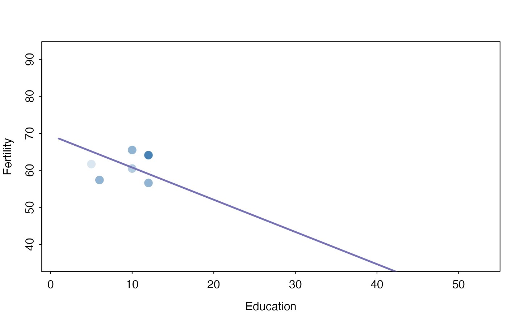
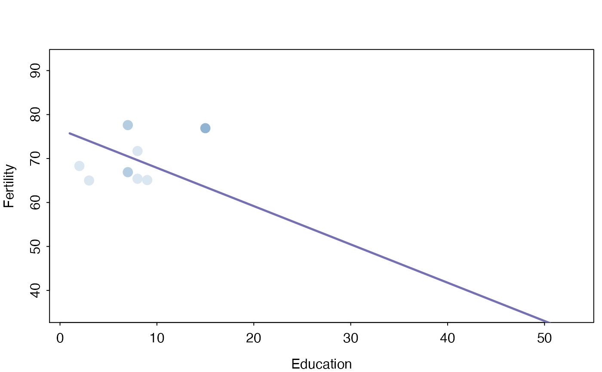
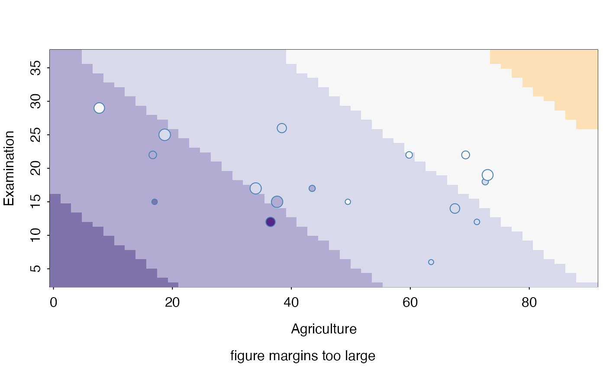
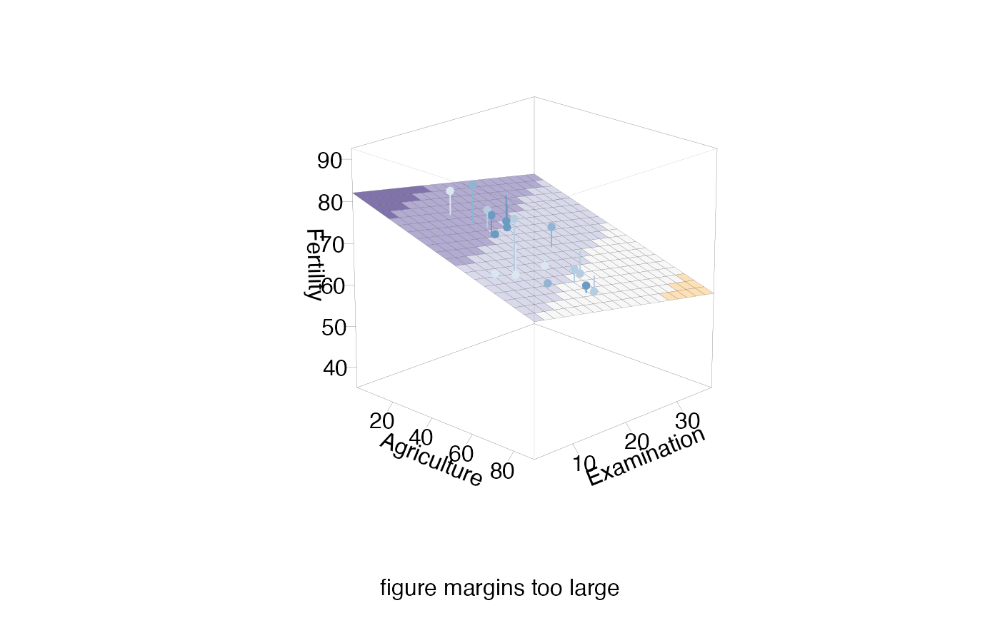

The section plot relates a fit or fits to one or two predictors (sectionvar),
for fixed values of other predictors in conditionvals.
sectionPlot( CVdata, CVfit = NULL, response = NULL, preds, sectionvar, conditionvals, pointColor = "steelblue", sim = NULL, threshold = 1, linecols = NULL, dataplot = "pcp", gridsize = 50, probs = FALSE, view3d = FALSE, theta3d = 45, phi3d = 20, xlim = NULL, ylim = NULL, zlim = NULL, pointSize = 1.5, predictArgs = NULL, resetpar = TRUE, density = FALSE, showdata = density == FALSE, returnInfo = FALSE, pointColorFromResponse = FALSE, pcolInfo = NULL )
Arguments
| CVdata | the dataset used for the fit |
|---|---|
| CVfit | a fit or list of fits |
| response | name of response variable |
| preds | names of predictors |
| sectionvar | section variable, or variables. |
| conditionvals | conditioning values. A vector/list or dataframe with one row |
| pointColor | a color, vector of colors,or the name of variable to be used for coloring |
| sim | vector of similarity weights |
| threshold | used for similarity weights, defaults to 1. |
| linecols | vector of line colours |
| dataplot | "pcp" or "pairs". Used when there is no response, or more than two sectionvars. |
| gridsize | used to construct grid of fitted values. |
| probs | Logical; if |
| view3d | Logical; if |
| theta3d, phi3d | Angles defining the viewing direction. |
| xlim | passed on to plot |
| ylim | passed on to plot |
| zlim | passed on to plot |
| pointSize | used for points |
| predictArgs | a list with one entry per fit, giving arguments for predict |
| resetpar | When TRUE (the default) resets pars after drawing. |
| density | default FALSE. Use TRUE if model is a density function. |
| showdata | If FALSE, data on section not shown. |
| returnInfo | If TRUE, returns coordinates for some plots |
| pointColorFromResponse | ignore--For interactive use only |
| pcolInfo | ignore--For interactive use only |
Value
plotted coordinates, for some plots
Details
The type of plot depends on the fit and the section variables. Observations with non zero values of the similarity weights
sim are shown. If no fit is provided, the data are shown as a parallel coordinate plot or pairs
plot, depending on dataplot.
The fit could also be a density estimate.
Examples
#Fit a model. f <- lm(Fertility~ ., data=swiss) svar <- "Education" preds <- variable.names(f)[-1] sectionPlot(swiss,f, "Fertility",preds,svar, swiss[12,])# PCP of swiss data, showing only cases whose percent catholic and infant.mortality are # similar to those of the first case sectionPlot(swiss,preds=names(swiss), sectionvar= names(swiss)[1:4],conditionvals=swiss[1,] )